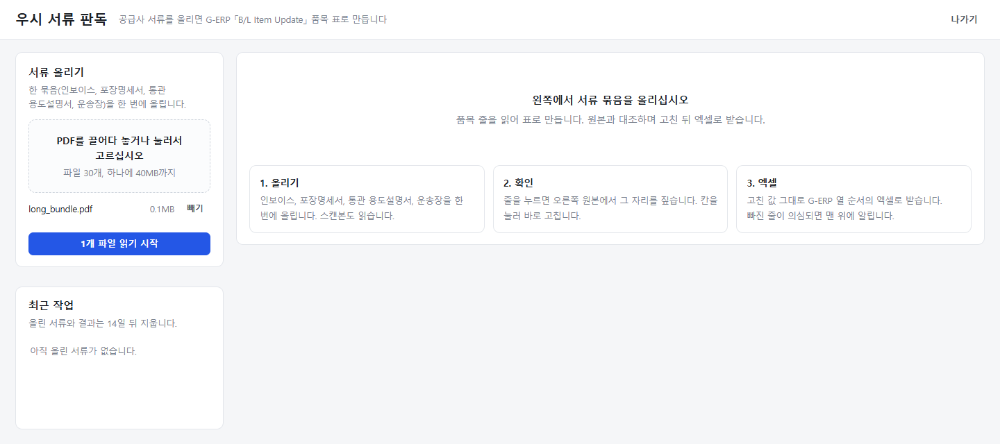
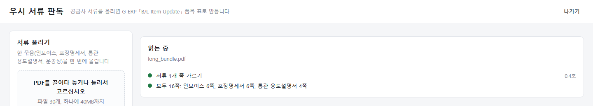
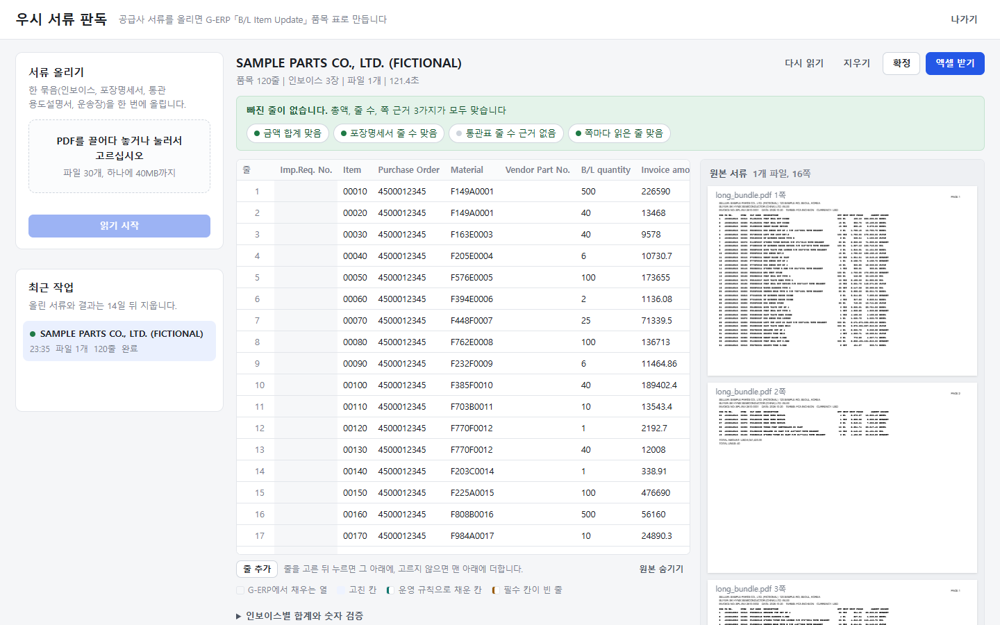
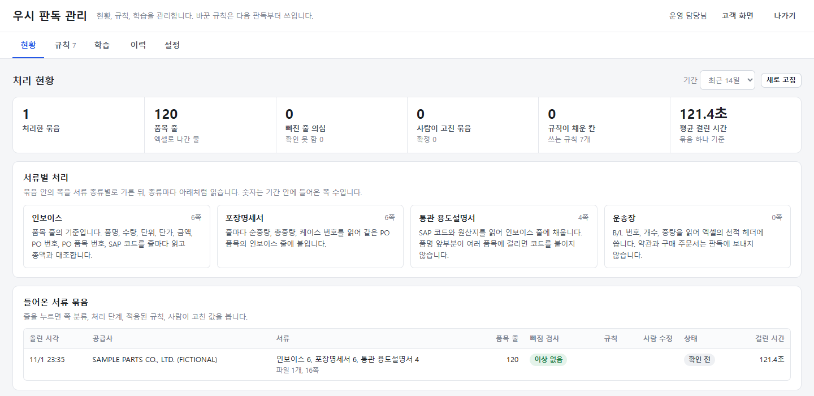
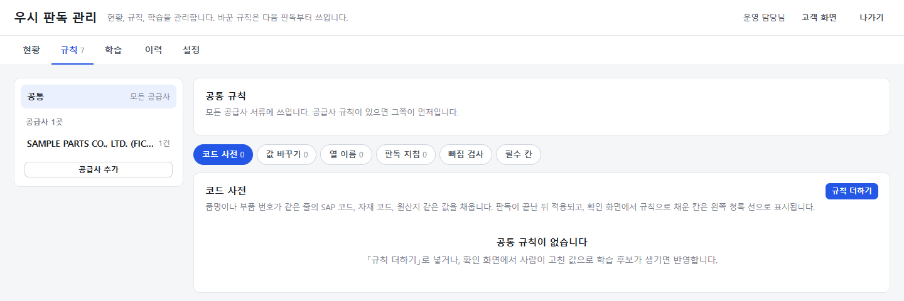
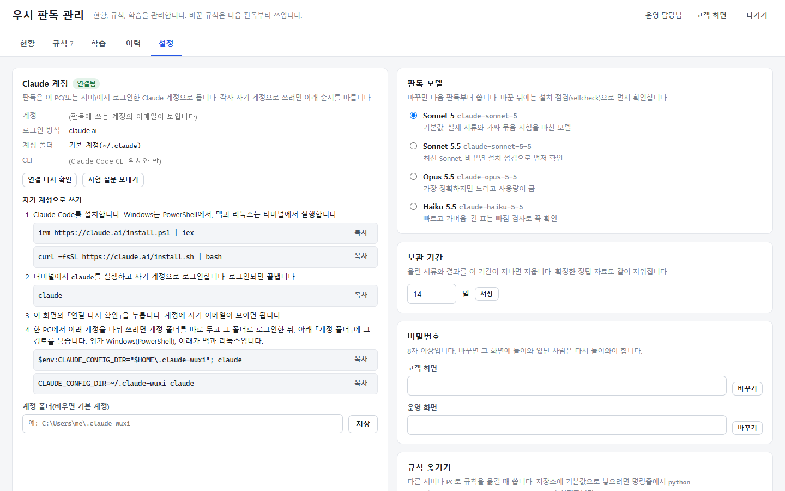

하이닉스 우시 담당자가 올린 공급사 서류 묶음을 품목 줄마다 읽어 G-ERP 「B/L Item Update」 엑셀로 만드는 앱을 넘겨받는 법
1부만 읽으면 됩니다. 1장에서 전체 그림과 할 일 세 가지를 보고, 일이 생기면 4장과 6장에서 그 상황을 찾습니다. 넘기는 날에는 7장 체크리스트를 위에서부터 따라갑니다.
2부는 AI 가 읽는 부분이라 넘겨도 됩니다.
이 PDF 를 AI(Claude 등)에게 올리고 아래 문장을 그대로 붙여 넣습니다. AI 는 2부의 지침대로 한 단계씩 안내합니다.
화면이 대부분을 스스로 합니다.
운영 담당은 「빠진 줄 의심」이 뜬 묶음을 살피고, 학습 후보를 반영하면 됩니다.
고객은 서류를 올리고 엑셀을 받습니다. 운영 담당은 규칙을 고르고 반영합니다.
올리기, 확인, 엑셀 세 걸음입니다. 비밀번호 하나로 들어옵니다.

1 2 3 4고객 화면, 서류를 고른 모습(가짜 서류로 띄운 예시 화면).

1읽는 중. 1 지금 하는 단계와 걸린 시간이 차례로 나옵니다(쪽 가르기, 서류별 AI 판독, 검증).

1 2 3 4 5 6가짜 서류 120줄, 인보이스 세 장 묶음을 실제로 읽은 결과(121초).
대조 모드(2026-11-10 더함): 여러 묶음을 원본과 맞춰 확정할 때 씁니다. 위쪽 「대조 모드」를 누르면 작업 목록이 접히고 표와 원본이 나란히 크게 놓입니다. 표에는 Main 항목(PO No., Material Code, 품명, 부품 번호, 납품 수량, 단위, 단가)과 통화, Invoice No. 만 나오고, 포장명세서에만 있는 줄은 줄 번호 옆에 PL 로 표시됩니다. 가운데 경계선을 끌어 너비를 바꾸고, 원본은 원본 위에서 Ctrl 을 누른 채 휠을 돌려 마우스 자리를 중심으로 확대, 축소하고(노트북 터치패드는 두 손가락 오므리기), 확대한 동안에는 원본을 끌어 옮깁니다. 원본 칸 머리의 −, +, 맞춤 버튼은 아래 쪽으로 내려가도 맨 위에 붙어 있습니다. Enter 는 아래 줄의 같은 칸으로 가고, 확정하면 확정하지 않은 다음 작업이 열립니다. 「모든 열 보기」로 전체 열을 볼 수 있습니다. 기본 화면은 그대로입니다.
원문 대조(2026-11-11 더함): 대조 모드에서는 칸마다 원본 PDF 글자와 맞춰 본 결과가 표시됩니다. 주황 테두리는 원본에서 같은 값을 못 찾은 칸, 회색 칸은 스캔이라 확인할 수 없는 칸, 흐린 글씨는 빈 칸인데 원본의 같은 줄에 하이닉스 자재 번호나 PO 로 보이는 값이 있는 칸입니다(두 번 누르면 채움). 「확인할 칸으로 가기」로 표시된 칸만 차례로 봅니다. 표시가 없는 칸은 원본에 같은 글자가 있다는 뜻이고, 그 칸에 들어갈 값이 맞는지까지 보장하지는 않으므로 확정은 사람이 합니다. AI 를 다시 부르지 않습니다(tools/cell_check.py).
고객 화면 주소 뒤에 /admin. 비밀번호는 고객 화면과 따로이고, 들어올 때 적은 이름이 이력에 남습니다.

1 2 3 4 5운영 화면 현황 탭(위 결과 화면의 묶음 하나를 읽은 뒤).

1 2 3규칙 탭. 1 공통과 공급사 고르기, 2 규칙 종류 여섯, 3 규칙 더하기.

1 2 3 4 5설정 탭. 개인 정보 자리는 가렸습니다.
| 탭 | 보는 것과 하는 일 |
|---|---|
| 현황 | 기간 안에 들어온 묶음, 품목 줄, 「빠진 줄 의심」, 사람이 고친 묶음, 규칙이 채운 칸. 묶음을 누르면 쪽 분류, 처리 단계, 빠짐 검사 결과, 쓰인 규칙, 고객이 고친 칸(전과 후) |
| 규칙 | 공통과 공급사별 여섯 종류: 코드 사전(품명에 맞는 SAP 코드 채우기), 값 바꾸기(PCS 를 EA 로), 열 이름, 판독 지침, 빠짐 검사, 필수 칸. 같은 자리에서는 공급사 규칙이 이깁니다 |
| 학습 | 고객이 고친 칸, 더한 줄, 「빠진 줄 의심」 판정으로 규칙 후보를 만듭니다. 후보마다 근거와 미리보기(확정하거나 엑셀로 받은 묶음에 적용하면 몇 칸이 맞고 어긋나는지) |
| 이력 | 규칙을 만들고, 반영하고, 끄고, 격상하고, 지운 일을 누가, 언제, 왜 했는지 |
| 설정 | 판독에 쓰는 Claude 계정(이메일, 「시험 질문 보내기」), 계정 폴더, 판독 모델, 보관 기간, 비밀번호, 규칙 내보내기와 가져오기 |
| 단계 | 뜻 |
|---|---|
| 후보 | 학습이 만든 규칙. 아직 판독에 쓰지 않습니다. 반영하거나 거절하고, 거절한 후보는 다시 올라오지 않습니다 |
| 반영 | 다음 판독부터 씁니다. 직접 더한 규칙은 바로 반영. 끄면 다시 켤 수 있습니다 |
| 격상 | 공급사 규칙을 공통 규칙으로 올립니다. 다른 공급사에서도 같은 수정이 나오면 「격상 제안」에 뜹니다 |
모두 두 화면에서 하고, 저장하면 다음 판독부터 반영됩니다.
고객 화면에서 그 묶음을 열고 다시 읽기. 같은 묶음이 반복해서 실패하면 운영 화면 설정에서 「시험 질문 보내기」로 Claude 계정이 답하는지 보고, 디스크 여유 공간을 봅니다. 오류 문장은 2부 A7.
운영 화면 규칙 탭에서 종류와 범위(공통 또는 공급사)를 고르고 값을 넣어 저장합니다. 이유 칸은 이력에 남습니다. 잘못 넣었으면 끄거나 지웁니다. 운영 값을 저장소 기본값으로 올리려면 python tools/wuxi_rules.py export --to-default 뒤 커밋합니다.
송하인 이름이 서류마다 조금씩 달라서입니다. 규칙 탭의 공급사 정보에서 한쪽에 다른 쪽의 알아보는 낱말을 더하고, 남은 쪽은 규칙이 없으면 그대로 둡니다.
운영 화면 설정에서 두 비밀번호를 바꿉니다. 운영 비밀번호를 잊었으면 띄운 PC 에서 python tools/wuxi_web.py set-admin-password, 고객 화면은 set-password. 고객 화면 비밀번호를 바꾸면 고객에게 새로 알립니다.
띄운 PC 의 터미널에서 claude 로 다시 로그인하고, 운영 화면 설정에서 연결 다시 확인으로 이메일을 봅니다. 개인 계정과 나누려면 판독용 폴더로 로그인한 뒤($env:CLAUDE_CONFIG_DIR="$HOME\.claude-wuxi"; claude) 그 경로를 「계정 폴더」에 넣습니다.
매일 2분, 매주 5분, 매월 5분이면 충분합니다.
| 주기 | 할 일 | 어디서 |
|---|---|---|
| 매일 | 현황에서 「빠진 줄 의심」과 실패한 묶음이 없는지 봅니다 | 운영 화면 현황 |
| 매주 | 학습 후보를 반영하거나 거절합니다. 「격상 제안」이 있으면 봅니다 | 운영 화면 학습 |
| 매월 | 규칙 내보내기로 백업 파일을 받아 회사 드라이브에 둡니다. 「시험 질문 보내기」로 Claude 계정을 확인합니다 | 운영 화면 설정 |
| 코드를 고치면 | python -m pytest tests(AI 안 부름) 다음 python tools/selfcheck.py(실제 판독) | 저장소 폴더 |
화면에 뜬 문장을 아래 표에서 찾습니다.
| 이런 문장이나 일이 보이면 | 할 일 |
|---|---|
| 빠진 줄 의심 | 4장 1절. 원본과 줄 단위로 대조 |
| 확인 못 함 | 총액이 안 찍힌 서류처럼 대조할 근거가 없습니다. 원본으로 줄 수를 눈으로 확인 |
| 품명 끝이 원본과 다름 | 원본에서 품명이 칸 폭에 잘려 찍히면 AI 가 비슷한 줄을 보고 끝을 채울 수 있습니다. 찍힌 글자대로 고치고, 자주 나오면 그 공급사에 판독 지침 규칙(「잘린 낱말은 채우지 않음」)을 더합니다 |
| 판독이 오류로 끝남, 「claude CLI 가 … 로 끝났습니다」 | 다시 읽기. 반복되면 그 서류와 디스크 여유 공간 확인(4장 2절) |
| 「로그인이 필요합니다」(운영 화면 설정) | 띄운 PC 에서 claude 로 로그인한 뒤 「연결 다시 확인」(4장 7절) |
| 「claude CLI 한도」 | 그 계정의 사용 한도. 풀릴 때까지 기다리거나 다른 계정으로 바꿈 |
| 반영한 규칙이 안 쓰임 | 범위가 그 공급사인지, 그 묶음을 그 공급사로 알아봤는지 현황 자세히 보기에서 확인. 못 알아봤으면 알아보는 낱말을 더함 |
| 같은 공급사가 둘로 생김 | 4장 5절 |
| 「비밀번호를 여러 번 틀렸습니다」 | 한 IP 에서 1분에 5번까지. 1분 뒤 다시 |
| 「앞에 기다리는 작업이 많습니다」 | 줄이 8건 넘게 밀림. 잠시 뒤 다시 올림 |
| 「PDF 가 아닌 파일이 있습니다」, 「파일 하나는 40MB 까지」 | PDF 만, 하나에 40MB 까지. 큰 스캔은 나눠 올림 |
| 화면이 안 열림 | 띄운 PC 에서 앱이 도는지 확인하고 start.bat 또는 serve 로 다시 띄움. 결과는 남아 있음 |
| 올리기가 「준비 중」 | 다른 서버에 붙인 직후 우시 패키지를 받는 중. 잠시 뒤 다시 |
두 사람이 같이 앉아 1시간이면 끝납니다. 실제 고객 서류와 비밀번호는 Git 에 없으니 따로 전합니다.
| 무엇 | 어디에 | 넘기는 법 |
|---|---|---|
| 코드(원본) | GitHub jooaelee/Doc-reading | 저장소 소유권을 받는 분 계정으로 넘김(아래 순서) |
| 코드(사내 사본) | 사내 Git DT/KEROL_FMS_DOC_AI 의 wuxi_ocr/ | 이미 원본과 같은 판. 고친 판은 tools/sync_company_git.sh 로 맞춤(docs/사내-Git-맞추기.md) |
| 실제 고객 서류 | work/docs_raw/(Git 밖) | 하이닉스 우시 건 46건, PDF 65개. 회사 드라이브로 따로 전함 |
| 두 화면 비밀번호 | 띄운 곳의 work/(해시만) | 넘길 것 없음. 받는 분이 처음 띄울 때 새로 정함 |
| Claude 계정 | 띄운 PC 의 로그인 | 넘길 것 없음. 받는 분 계정으로 로그인 |
wuxi-ocr 의 Settings, General, Transfer ownership 에 받는 분 계정 이름을 넣습니다.claude 로 자기 계정에 로그인하고, 저장소를 받습니다: git clone https://github.com/<받는 분>/wuxi-ocrstart.bat, 맥과 리눅스는 ./start.sh. 가상환경과 패키지를 만들고, 두 비밀번호를 정하고, Claude 로그인을 확인한 뒤 브라우저가 열립니다.python tools/make_sample.py 다음 python tools/selfcheck.py. 품목 27칸이 모두 맞으면 정상.python tools/make_sample.py --lines 120 --invoices 3 --name long 다음 python tools/selfcheck.py --name long. 빠진 줄 0.work/samples/sample/)을 올리고 SAP 코드 한 칸을 고쳐 엑셀을 받습니다. 운영 화면 학습에 후보가 생기면 반영하고 「다시 읽기」. 청록 선이 보이면 정상.work/docs_raw/hx/ 에 넣고 python tools/batch_check.py work/docs_raw/hx --limit 10.| 안건 | 지금 방향 | 정할 것 |
|---|---|---|
| 띄울 곳 | .65 서버에서 따로 띄우기(포트 8767)가 기본. 포트를 못 열면 다른 웹 서버 주소 아래 /wuxi 로 붙이는 방법도 있음(docs/사내-Git-맞추기.md 4단계) | 어디에 띄울지, 1월 EC2 이관 때 함께 옮길지 |
| 코드 원본 | GitHub 에서 고치고, 스크립트로 사내 wuxi_ocr/ 를 덮어씀. 사내에서 직접 고치지 않음 | 맞추기와 서버 반영을 누가, 얼마나 자주 |
| 고객 접속 | 사내망과 공용 비밀번호 하나. KEROL 에서 링크로 들어가게 할 수 있음 | 링크를 어디에 둘지, 사내망 밖 고객은 어떻게 |
| 판독 계정 | 띄운 곳에 로그인된 계정. 계정 폴더로 판독용을 따로 둘 수 있음 | 서버의 우시 판독용 계정을 따로 둘지 |
| 보관 기간 | 올린 서류와 결과를 14일 뒤 삭제 | 고객과 맞출 기간 |
| 정답 자료 | 고객이 「확정」을 누른 묶음이 학습 미리보기의 정답이 됨 | 고객에게 확정을 요청할지, 실제 G-ERP 에 넣은 엑셀을 받을 수 있는지 |
| 일 | 상태 |
|---|---|
| 앱(고객 화면, 운영 화면, 규칙과 학습, 빠짐 검사, 엑셀) | 완성 |
| 자동 시험 | 226개 통과(1개는 KEROL DB 파일이 있어야 돎) |
| 실제 AI 판독(가짜 서류) | 글자, 스캔 27칸 모두 맞음. 120줄 세 장 빠진 줄 0, 남는 줄 0, 1,080칸 모두 맞음(11/1) |
| 사내 Git 사본 | 원본 75f27b1 판과 같음(사내 커밋 bcefc7eb, 10/29) |
| 실제 고객 서류 일괄 점검 | 아직 |
| 서버에 띄우기 | 아직(DT 와 정함) |
같은 내용과 앞으로 바뀌는 것은 저장소 docs/진행-상황.md.
이 부분은 이 문서를 받은 AI 가 읽습니다.
사람은 넘겨도 됩니다.
당신은 Wuxi OCR(하이닉스 우시 서류 판독 앱)을 넘겨받아 운영하는 FSK L&S 담당자를 돕습니다. 담당자는 코드를 모를 수 있습니다. 1부는 담당자가 읽는 안내이고, 2부는 당신이 따를 사실과 절차입니다.
set-password, 운영 화면 설정)만 알려 줍니다.work/ 에만. 코드와 시험 속 실제 번호, 이름은 그대로 둡니다.wuxi_ocr/ 를 직접 고치지 않습니다.CLAUDE.md「화면 문구」.tools/wuxi_web.py(고객 화면과 작업 줄), tools/wuxi_admin.py(운영 화면 API). 기본 포트 8767. 고객 화면 /, 운영 화면 /admintools/wuxi_engine.py(입구, 공급사, 규칙 적용, 빠짐 검사)와 tools/docpipe.py(쪽 가르기, OCR, AI 호출, 후처리, 검증). 판독은 한 번에 한 건(엔진 잠금, 일꾼 하나, 줄 8건까지)tools/extract_mcp.py)로만 답을 받음. 기본 모델 Sonnet. 계정은 띄운 PC 의 로그인 또는 「계정 폴더」tools/ocr_vision.swift 를 빌드해 bin/). 값은 AI 가 그림에서 읽음tools/gerp_xlsx.py. 인보이스 줄에 포장명세서 줄(중량, 케이스)을 (인보이스 번호, PO, PO 품목 번호)로 이음. =, +, @ 로 시작하는 글자는 수식이 되지 않게 처리WUXI_HOME(기본 work/, Git 밖): 작업과 올린 서류(jobs/), 규칙 운영 값(rules.json), 이력(rules_history.jsonl), 설정(settings.json), 비밀번호 해시(access.json, admin.json), 접근 기록(access.log). 규칙 기본값은 schema/rules_default.json(Git)WUXI_SESSION_SECRET 또는 work/.secret(주인만 읽음). 틀리면 IP 마다 1분에 5번. 접근 기록에 서류 내용은 남기지 않음DT/KEROL_FMS_DOC_AI 의 wuxi_ocr/. tools/sync_company_git.sh <사내 저장소> --push 로 이 저장소 판을 덮어씀(비밀번호 해시 파일은 남김)python -m pytest tests 226개(AI 안 부름). 실제 판독 점검 tools/selfcheck.py, 실제 서류 일괄 tools/batch_check.py| 자리 | 무엇 |
|---|---|
README.md, CLAUDE.md | 5분 시작, 명령, 환경변수. AI 작업 규칙과 파일 지도(AI 는 이것부터 읽음) |
tools/wuxi_engine.py, tools/docpipe.py | 판독 엔진. docpipe.py 는 크고 오래된 파일이라 고칠 때 시험 필수 |
tools/wuxi_rules.py, tools/wuxi_learn.py | 규칙 저장소와 단계, 학습 후보와 미리보기, 격상 제안 |
tools/wuxi_web.py, tools/wuxi_admin.py | 고객 화면 서버와 운영 화면 API, 비밀번호, start, serve 명령 |
tools/gerp_xlsx.py | G-ERP 엑셀과 열 매핑 |
tools/make_sample.py, selfcheck.py, batch_check.py | 가짜 서류와 정답, 실제 판독 점검, 실제 서류 일괄 점검 |
tools/wuxi_mount.py, sync_company_git.sh | 다른 웹 서버에 /wuxi 로 붙이기, 사내 Git 맞추기 |
web/ | 고객 화면, 운영 화면, 공통 디자인, pdf.js 사본 |
schema/ | KEROL 코드 목록, 장소 표, 단위 별칭, 규칙 기본값 |
docs/ | 운영 화면 쓰는 법, 사내 Git 맞추기, 진행 상황, 하이닉스 중국법인 판, G-ERP PO 매핑, 이 인수인계서(docs/handover/) |
| 이름 | 뜻 | 기본 |
|---|---|---|
WUXI_HOME | 작업 폴더(서류, 결과, 규칙 운영 값, 이력, 비밀번호 해시) | work/ |
WUXI_KEEP_DAYS | 올린 서류와 결과의 보관 일수. 운영 화면 설정이 먼저 | 14 |
CLAUDE_CONFIG_DIR, WUXI_CLAUDE_CONFIG_DIR | 판독에 쓸 Claude 계정 폴더. 운영 화면 「계정 폴더」가 먼저 | 기본 계정 |
CLAUDE_BIN, WUXI_CLAUDE_BIN | Claude Code CLI 위치 | PATH |
MODEL | 판독 모델. 운영 화면 「판독 모델」이 먼저 | Sonnet |
WUXI_PASSWORD_HASH, WUXI_ADMIN_HASH | 비밀번호 해시(JSON). 없으면 work/access.json, admin.json | 없음 |
WUXI_SESSION_SECRET | 로그인 쿠키 서명 열쇠 | work/.secret |
WUXI_ENABLED | 0 이면 다른 서버에 붙지 않음 | 1 |
DOC_ROOTS | 옛 시연 화면의 표본 서류 폴더 | work/docs_raw |
selfcheck.py 27칸, 긴 묶음 빠진 줄 0, 학습 한 바퀴 뒤 청록 선wuxi_rules.py export --to-default 뒤 커밋docs/사내-Git-맞추기.md 4단계. 따로 띄우기: pip install -r requirements.txt, 서버 운영체제 계정으로 claude 로그인, 두 비밀번호, python tools/wuxi_web.py serve --host 0.0.0.0 --port 8767 을 서비스로 등록tools/sync_company_git.sh <사내 저장소> --compare(처음), 그다음 --pushwuxi_ocr/ 만 바뀜(스크립트가 밖이 바뀌면 멈춤)set-password, set-admin-passwordwork/docs_raw/<폴더>/ 에 묶음마다 폴더 하나로 → python tools/batch_check.py work/docs_raw/<폴더> --limit 10. 이어 하려면 --resumework/batch/selfcheck.py 27칸, 긴 묶음 빠진 줄 0. 하나라도 어긋나면 반영하지 않음| 화면의 문장(일부) | 까닭과 할 일 |
|---|---|
| 비밀번호를 넣어 주십시오 | 로그인이 풀림(12시간). 다시 넣음 |
| 비밀번호가 맞지 않습니다 / 여러 번 틀렸습니다 | 1분에 5번까지. 잊었으면 P7 |
| 화면 비밀번호가 아직 정해지지 않았습니다 | 띄운 곳에서 set-password |
| PDF 파일을 골라 주십시오 / PDF 가 아닌 파일이 있습니다 | PDF 만 올림 |
| 한 번에 30개까지 / 파일 하나는 40MB 까지 | 나눠 올림 |
| 앞에 기다리는 작업이 많습니다 | 줄 8건 초과. 잠시 뒤 |
| 읽는 도중 서버가 다시 시작되었습니다 | 「다시 읽기」 |
| 올린 서류가 남아 있지 않습니다 | 보관 기간이 지남. 다시 올림 |
| claude CLI 가 … 로 끝났습니다 | CLI 비정상 종료. 다시 읽기, 반복되면 디스크와 그 서류 |
| claude CLI 한도 | 계정 사용 한도. 기다리거나 계정 바꿈(P7) |
| 로그인이 필요합니다(설정의 Claude 계정) | 띄운 PC 에서 claude 로 로그인, 「연결 다시 확인」 |
| 준비 중(올리기) | 다른 서버에 붙은 직후 패키지를 받는 중. 실패했으면 서버를 다시 띄움 |
이 PDF 를 읽는 AI 는 코드를 볼 수 없습니다. 화면 동작을 바꾸거나 고장을 고칠 일은 담당자가 저장소를 받은 PC 에서 Claude Code 를 열고 맡기게 합니다. 그쪽 Claude 는 CLAUDE.md 를 읽고, 고친 뒤 시험과 selfcheck.py 로 확인합니다. 담당자에게 맞는 문장을 골라 줍니다.
wuxi_ocr/ 를 직접 고치게 하지 않습니다(다음 맞추기 때 사라짐).src/docai) 코드를 고치게 하지 않습니다.이 문서의 원본은 저장소 docs/handover/handover.html 이고, docs/handover/build.cjs 로 PDF 를 다시 만듭니다. 화면이 바뀌면 Claude Code 에 "인수인계서를 지금 화면에 맞게 다시 만들어 줘"라고 맡깁니다.